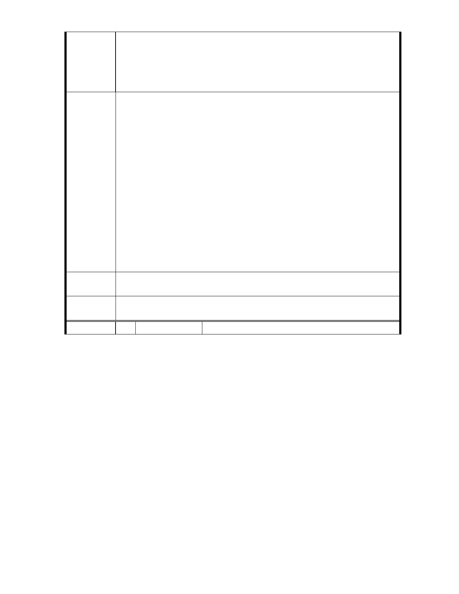

確認能規畫該地區、段『行水區』寬度減半 (或取消) 。
(1) 將來政府開發時 : 採『區段徵收』或『低密度開
發』; 政府既能推行『公共政策』亦不必花費公
帑來『依法徵收。
(2) 人民依憲法應受保障之『財產權』亦得以維護。
八、為了該區段『百年防洪大計』 土地所有權人提出建議 :
(1) 願有條件捐出 : 靠河川邊緣 ( 狹長型 ) 一半
土地; 增加該區段『河川面寬度』及『景觀 道路』
用。
@ 「河面寬度加寬』，『洪災時』成為『洪水滯留
緩衝區』; 減低 r 洪水災害』發生。
建議辦法
@ 「景觀道路』美化 , 增加市容景觀。
(2) 政府給予土地所有權人 ? 剩下靠山邊另『一半狹
長土地』; 規畫為『建築用地』。 如此：政府既
能不必花費公帑來推動『公共政策』， 人民依憲
法應受保障之『財產權』亦得以維護。
懇請台北市政府利用此次「都市計畫通盤檢討』案 , 能明
智、確實深入檢討該地區、段之實際狀況 ; 作出明智的決策。對
推行『公共政策』及對人民依憲法應受保障之「財產權」 ;不會
產生『對立』與『難解』。
專
結
案
小
組
論
建議納入「臺北市士林區都市計畫通盤檢討（主要計畫）案」內。
委
決
員
會
議
依專案小組結論辦理。
編 號 42 陳情人 賴同祥等 6 人
- 56 -